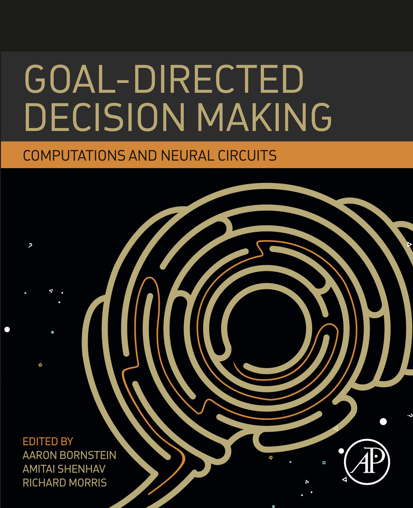

Goal-Directed Decision Making: Computations and Neural Circuits

Elsevier
Table of contents
Introduction
Actions and Habits: Psychological issues in dual process theory.
- Anthony Dickinson (Cambridge University)
I. Computations
Instrumental divergence and goal-directed choice.
- Mimi Liljeholm (University of California, Irvine)
Temporal dynamics of goal-directed decision making.
- Alec Solway (Virgina Tech) & Matthew M. Botvinick (Google DeepMind)
Constraints and priors in human structure learning.
- Anne Collins (University of California, Berkeley)
Simulation and evaluation in deliberative decision-making.
- Brandy Schmidt, Yannick Breton & David Redish (University of Minnesota)
Competition and cooperation between multiple RL systems.
- Wouter Kool, Fiery Cushman & Sam Gershman (Harvard University)
II. Neuroscience
Cortical determinants of goal-directed action.
- Shauna Parkes & Etienne Coutureau (University of Bordeaux)
Distinct functional microcircuits in the nucleus accumbens underlying goal-directed decision making.
- Regina Carelli, Travis M. Moschak & Liz West (University of North Carolina, Greensboro)
Contribution of striatal cholinergic interneurons to adaptive learning and choice.
- Vincent Laurent & Jesus Bertran-Gonzalez (University of New South Wales)
The dopamine prediction-error: It's not what you think it is.
- Melissa Sharpe & Geoff Schoenbaum (National Institute of Drug Abuse)
A state representation for reinforcement learning and decision-making in the orbitofrontal cortex.
- Nicolas Schuck (Princeton University), Bob Wilson (University of Arizona) & Yael Niv (Princeton University)
III. Applications
The development of goal-directed decision-making.
- Catherine A. Hartley (New York University)
Social learning & goal-oriented decision-making.
- Oriel FeldmanHall (Brown University) & Luke Chang (Dartmouth University)
Goal-directed action in disorders of compulsivity.
- Sanne de Wit (University of Amsterdam)
Goal-directed deficits in psychosis.
- Richard W. Morris (University of New South Wales)
Drug addiction: Augmented habit learning or failure of goal-directed control?
- Laura Corbit (Sydney University)
Case-based decision neuroscience.
- Rahul Bhui (Harvard University)
IV. Open questions
Re-aligning models of habitual and goal-directed decision-making.
- Kevin Miller (Princeton University), Elliot Ludvig (University of Warwick), Giovanni Pezzulo (National Research Council of Italy) & Amitai Shenhav (Brown University)
The motivation of action and the origins of reward.
- Bernard Balleine (University of New South Wales)